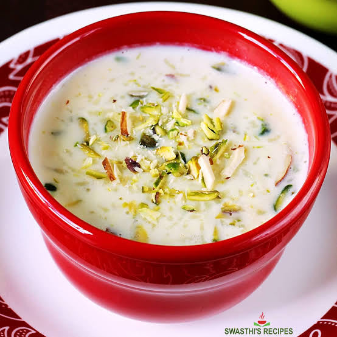

Kheer

Description:
Kheer is a traditional Indian dessert made with rice, milk, and sugar, flavored with cardamom and garnished with nuts. It is a creamy and delicious sweet dish that is often served during festivals and special occasions.
Ingredients:
- 1/2 cup basmati rice
- 4 cups whole milk
- 1/2 cup sugar
- 1/4 teaspoon cardamom powder
- 2 tablespoons chopped almonds
- 2 tablespoons chopped cashews
- 2 tablespoons raisins
Steps:
- Rinse the rice thoroughly and soak it in water for 30 minutes. Drain the rice and set it aside.
- In a heavy-bottomed pan, bring the milk to a boil over medium heat. Reduce the heat to low and add the soaked rice. Cook the rice in the milk, stirring occasionally, until it is soft and the mixture thickens, about 30-40 minutes.
- Add the sugar and cardamom powder to the rice and milk mixture. Stir well and cook for another 5-10 minutes, until the sugar is dissolved and the kheer reaches your desired consistency.
- In a small pan, lightly toast the chopped almonds, cashews, and raisins until they are golden brown. Add the toasted nuts and raisins to the kheer and mix well.
- Remove the kheer from heat and let it cool slightly. Serve warm or chilled, garnished with additional nuts if desired.